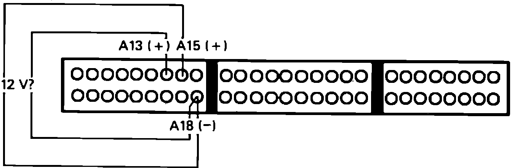

Check Engine Warning Light Is ON - LED Doesn't Blink
1. Turn ignition off. Inspect, and replace if necessary, the following fuses:^ ECU - main fuse box
^ Hazard - positive battery clamp
^ No. 4 - underdash fuse box
2. Check all ground connections at thermostat housing. Repair connections as necessary.
3. Turn ignition on, if fault codes are now displayed refer to DIAGNOSIS BY CODE for the code(s) listed. If the LED still does not flash, continue.
4. If engine will not start, proceed to step 7. If engine starts, continue.
5. Remove connector B from ECU.
6. Turn ignition on and observe check engine light.
Light on, repair short to ground between terminal B6 and instrument cluster. End of test.
Light off, replace electronic control unit.
7. Turn ignition on. While observing check engine light, disconnect MAP sensor and throttle angle sensor one at a time. If the light went out, replace the sensor that caused the light to go out when disconnected. If the light remained on continue.
8. Disconnect PA sensor and inspect diagnostic LED. If LED now flashes code 13, replace PA sensor. If no code 13, continue.
9. Turn ignition off and connect test harness to main harness only, leaving ECU disconnected.
10. Check for continuity to ground from harness terminals C13 and C15 individually.
Continuity, repair short to ground in wire showing continuity. End of test.
No continuity, proceed to next step.
11. Reconnect all sensors and test harness to ECU.
12. Turn ignition on.
13. Measure voltage between terminals A16 and ground and A18 and ground.
1 volt or above, proceed to next step.
Less than 1 volt, proceed to step 15.
14. Repair open in wire(s) that read above 1 volt, between ECU harness and thermostat housing. End of test.
ECU Testing:

15. Measure voltage between terminals A13 and A18 and between A15 and A18.
Battery voltage, proceed to step 17.
No battery voltage, proceed to next step.
16. Repair open in wire not showing battery voltage, between ECU and main relay. End of test.
17. Replace electronic control unit.